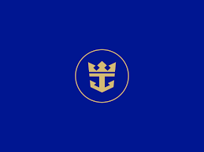

Our Partners
Below is a selection of our corporate partners.

The Coca-Cola Company
GAP, Inc
HP, Inc

Procter & Gamble

Royal Caribbean Group
Warner Bros, Discovery
Climate change is altering the trajectory of our planet, threatening nature and people lives and livelihoods. We are already seeing its catastrophic impacts: freshwater supplies are shrinking, agricultural yields are dropping, forests are burning, and rising oceans are becoming more acidic. As a climate crisis looms, we are also seeing an alarming decline in biodiversity. In just over 40 years, there has been a 60% decline in the world populations of mammals, birds, fish, and reptiles. As the world leading conservation organization, WWF is on a mission to build a future where people and nature thrive. But we cannot do it alone. We need to engage everyone—communities, governments, and companies—to create lasting change. That why we are partnering with some of the world leading corporations to meet big conservation threats with an equally big response
At WSN, we recognize the pressure that business puts on the environment. Our partners also understand that a healthy business depends on a healthy planet. Together, we map a vision that sets a high sustainability standard across a company's entire operations, and well beyond. And when their vision aligns with ours, anything is possible.
We work hand-in-hand with our corporate partners to reach our shared goals:
CLIMATE
FOOD SYSTEMS
FORESTS
FRESHWATER
OCEANS
WILDLIFE
We work with businesses to transform their vast networks of suppliers, partners, consumers, and employees into a powerful force for good. A force that drives sustainability up and down global supply chains. A force that mobilizes conservation investments in thousands of communities. A force that inspires millions of employees around the globe to champion conservation at work and at home. A force that drives billions of consumers toward greener choices.
Below is a selection of our corporate partners.
The Coca-Cola Company
GAP, Inc
HP, Inc
Procter & Gamble
Royal Caribbean Group
Warner Bros, Discovery
For more information about our work with business, please contact us at wsnwildife@mya.org.